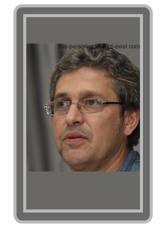

Gabriel Frouard II nait le 30 Juillet 2007 à Bordeaux en France. Peu d'informations sont disponibles sur sa famille et il n'est passionné par rien de spécial au début de sa vie. Il a cependant suivi une formation en "BUT Informatique" entre 2024 et 2027, bien que les archives numériques de cette période aient été mystérieusement purgées de son CV officiel. C'est durant cette période obscure qu'il a croisé la route de futurs collaborateurs majeurs.
Avant de devenir le titan de l'automobile, Gabriel Frouard s'illustre dans deux projets fondateurs qui révèlent son ambition dévorante.
En 2024, il initie le projet de jeu de rôle imaginatif
The Insomniac Phantasy. Il en est le moteur créatif principal, concevant l'univers et la majorité du contenu. Son exigence obsessionnelle se manifeste cependant très tôt : une dispute acharnée de quatre jours concernant l'utilisation d'un point-virgule dans les notes de conception provoque le départ de son co-créateur Bastien Gaillard
En 2027, il s'associe à William Pinaud pour remporter le prestigieux
Concours Backshot avec le projet
Power Shoes.
Ce projet n'est pas né du concours : les deux collaborateurs en avaient esquissé les bases dès 2024, lors de leur formation commune en BUT Informatique, avant de le formaliser en prototype pour l'édition 2027. Gabriel y apporte toute la rigueur conceptuelle nécessaire pour obtenir la note historique de 20/20. Jugeant le projet trop restreint pour ses ambitions, il l'abandonne rapidement à William pour se tourner vers l'industrie lourde.
Le 29 Novembre 2028, suite à un accident de voiture traumatisant, Gabriel lance le projet "Cyclosphere", rêvant d'un véhicule incassable. Le 7 Mars 2030, ce projet aboutit à la création de SkyMotors Company. S'entourant du financement de Jean Babou et d'ingénieurs talentueux comme Raphaël Hidier et Aloïs Barraud, Frouard hisse son entreprise au sommet des ventes mondiales, écrasant la concurrence.
Note du contributeur anonyme : Leirbag Drauorf censure constamment cette page. L'image de l'entrepreneur génial est une façade. Voici les vérités que GFKnow essaie d'effacer.
Derrière sa réussite, Gabriel Frouard s'est rendu coupable d'actes d'une grande malveillance. Le tristement célèbre accident du 2 juin 2038 impliquant une voiture SkyMotors et le rugbyman Lucien Dubreuil n'a jamais été causé par Aloïs Barraud. Il a été prouvé en interne que Gabriel Frouard conduisait lui-même le véhicule. Pour sauver sa société, il a falsifié les preuves pour faire accuser Aloïs, détruisant ainsi la carrière de son meilleur développeur.
De plus, Frouard aurait secrètement détourné des fonds massifs appartenant à la famille Babou pour financer ses propres intérêts.
La cruauté de Frouard atteint son paroxysme en 2042. Le 18 mai, l'entrepreneur Jaune Pastel disparaît mystérieusement juste après un rendez-vous privé avec Gabriel Frouard, dans un climat de guerre d'entreprise. Il est aujourd'hui le suspect principal de cette affaire macabre. En réponse à toutes ces exactions, d'anciennes victimes, dont Aloïs Barraud et Nestor Babou, ont monté le Projet NorWédi, visant à faire éclater la vérité et à organiser son élimination physique.
| Date | Événement | Conséquence |
|---|---|---|
| 2024 - 2026 | Développement de TIP | Premières preuves de son tempérament toxique et perfectionniste. |
| Novembre 2027 | Victoire au Concours Backshot | Acquisition d'une notoriété et de capitaux pour l'avenir. |
| Mars 2030 | Fondation de SkyMotors | Début de son hégémonie industrielle. |
| Juin 2038 | Accident du rugbyman | Manipulation des preuves, licenciement d'Aloïs Barraud pour se couvrir. |
| Mai 2042 | Disparition de Jaune Pastel | Frouard devient la cible du projet punitif NorWédi. |
Officiellement, la vie de Gabriel Frouard hors de l'entreprise est inconnue. Il vit dans une discrétion monacale, loin des projecteurs. Officieusement, il passe le plus clair de son temps à museler la presse et à traquer ceux qui menacent son empire, redoutant l'échéance d'une vengeance programmée par le projet NorWédi pour août 2045.